Left menu: four options
Round OR, with the owner's rulings from rounds OT and OV folded in. Four different structures for the left column, each drawn on the real page (a screenshot of the built app with the left column emptied), on three example people, open, closed and at 390 wide. Everything is in motion from the first frame. Mockups only: nothing in atuned_src/ changed, nothing built, nothing pushed. The figures come from the built page on 1 October 2026.
Each rail page is live and moving. Add ?p=marcus, ?p=diane or ?p=tomas, ?s=closed, ?v=390, ?still=1 for the end state with no motion.
What every option does now
- CQ and DQ are the only names on screen. The full words, coherence and decoherence, live in the tooltips. On a phone a tooltip is not a route, so the bar should open its reading in the right panel on a press, the way an item does in the Awareness section.
- One bar for CQ and DQ. CQ at the left end, DQ at the right, a gradient pulled between them. The seven seat marks of DQ run the whole width of the bar. The white line is placed by how far the person oscillates, using the one oscillation measure the engine has (cqRange in ui/personas.js, the Compass's own). It moves slowly, the way the Compass marker does. Three ways of placing the line are on the line explainer below, because the measure is a width and not a position.
- Colours are the elements. Vitality yellow, awareness indigo, will blue. Radiance is the three together, a sun with a ray in each.
- Flow is measured along CQ against SQ. The wave runs root to crown along the 21 laws, which are seated at the same seven seats as the 112 addresses. The lane it may use is as tall as CQ. Level and roughness inside the lane come from SQ at each seat. Speed comes from DQ. In the engine Flow is SQ only, so the lane is a drawing choice until you say otherwise (see the flow explainer).
- Benign is a halo, malignant is a pitchfork, in line and ring, no fill.
- The Awareness section loses the legend line under the four roots. The top items stand out as larger tiles, every group folds and keeps its top items in its header, and a press on any item shows it in the right panel. See the full page picture below.
- Nothing draws across to the centre. The celestial map is untouched: it lives inside the folded Root Energetics header at the top of every rail, as built.
The four side by side, open, 1600 by 1000
Marcus, a creative director: CQ 62, DQ 11, Flow 1.00. A clear person, so the differences between seats are small.

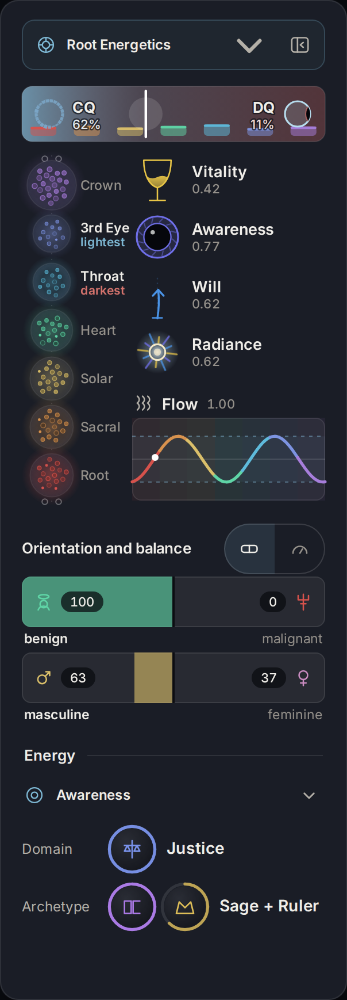

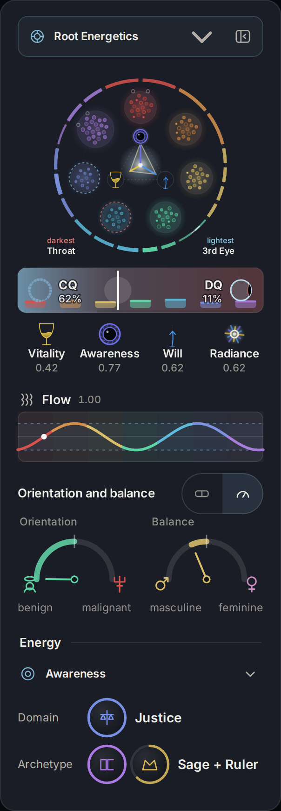

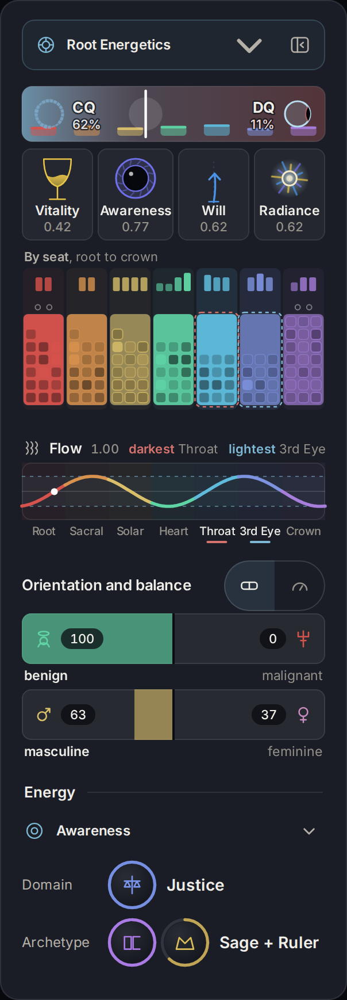

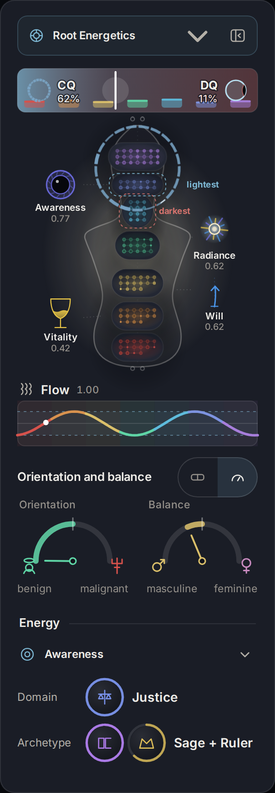
Tomas, a long haul driver: CQ 31, DQ 53, Flow 0.00. A heavy person, so the darkest and lightest seats and the choppy wave show.

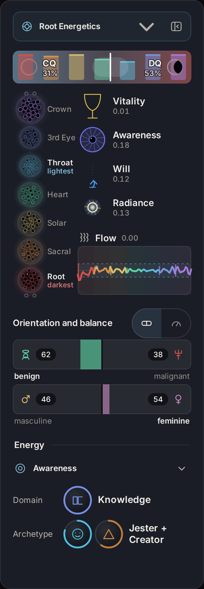

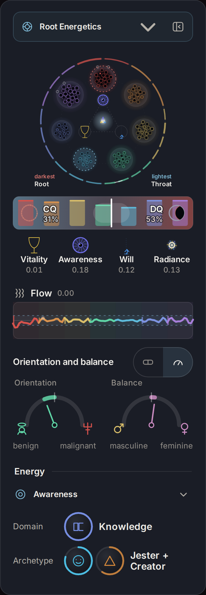

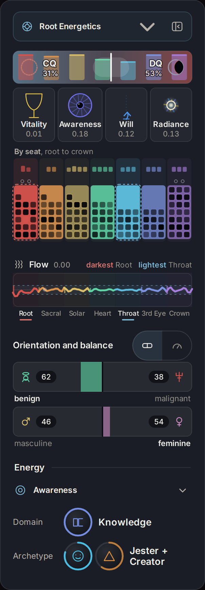

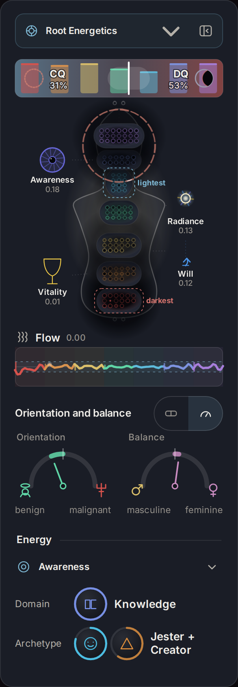
The built rail today, for comparison (Marcus and Tomas): Marcus, Tomas, the six bars cropped.


The first screen, measured
Measured on these pages at 1600 by 1000 with the column open and Awareness folded. The archetype row is the second line of the Energy section. The panel ends at 990.
| Interactive controls on the first screen | Archetype row ends at | Controls under 44 by 44 | Rail scrolls | |
|---|---|---|---|---|
| The built rail | 14 | 985 (starts at 941, touching the edge) | not measured | no |
| A The spine | 11 | 934, 56 pixels clear | 0 | no |
| B The orrery | 11 | 965, 25 pixels clear | 0 | no |
| C The common axis | 11 | 965, 25 pixels clear | 0 | no |
| D The figure | 11 | 960, 30 pixels clear | 0 | no |
The target is under 12 simultaneous choices and none under 44 by 44. All four are under 12, and the Style switch is a 44 pixel pair now. Each page is shown moving between two frames taken 900 milliseconds apart; the pixels differ in all four, including Marcus, whose wave and lamps still run.
The four options
A. The spine
The wire that runs down the gutter today becomes a column of the 112 addresses, seven seat clusters, crown at the top. Rows stay rows, with a form where the bar was.

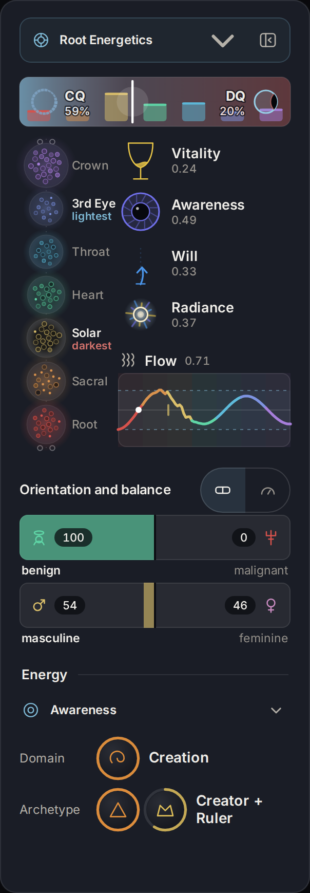

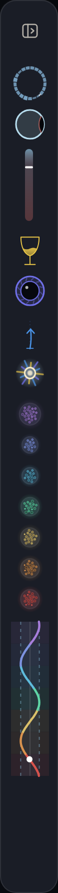

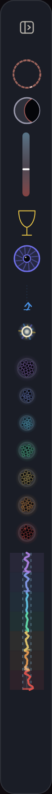

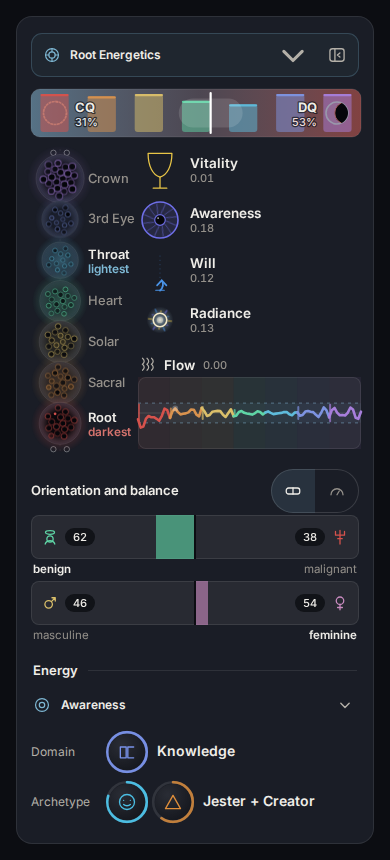

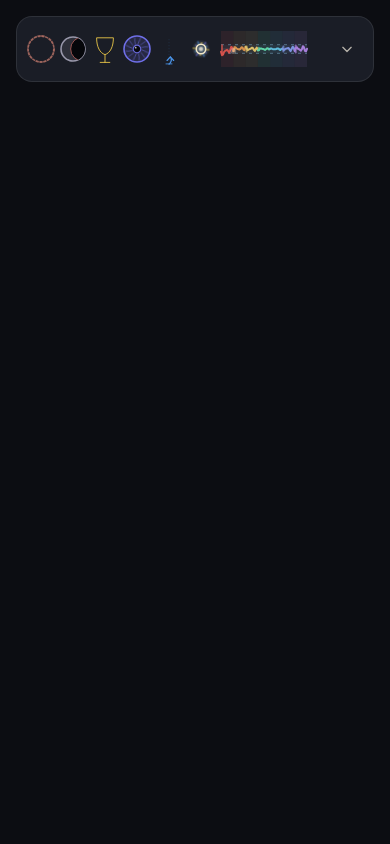
What a person reads at a glance
- CQ and DQ, one bar
- Left end, a ring of 21 arcs, thick where a law is held and a hairline where it is open. Right end, an eclipse: the dark disc covers exactly the share DQ says. Seven coloured marks run the whole width of the bar, one a seat, as tall as the charge there. The white line is how far the person swings.
- Vitality
- A yellow vessel, filled to the energy left.
- Awareness
- An indigo iris, open as wide as it sees.
- Will
- A blue arrow, as long as the will that gets through, swaying with what does not.
- Radiance
- A sun with a ray in each of the three element colours. A bigger halo is more light.
- The 112 addresses
- A column of seven lamps, crown at the top. One dot is one address. Bright and small is clear. A black core and dark, larger dots is heavy. The words darkest and lightest sit on those two seats.
- Flow
- The band under the rows, in a lane as tall as CQ. Level and roughness are SQ at each seat. Faster water is more DQ.
Squint test
First frame
Moving from the first frame in all states, quietly: the wave runs at the Field's rate for the person's DQ, the line on the bar swings, the vessel surface drifts, the iris and sun turn slowly, the lamps breathe at their seat phase, loaded addresses pulse. Closed, the strip keeps the bar, the four forms and a standing wave. Reduced motion draws the end state.
Cost notes
- Lowest build cost. Rows stay rows, so the six-row assumption in ui/railwire.js (the gutter wire and its pulses) is the one piece that is retired and replaced by the spine.
- New work: the CQ and DQ bar, four small renderers (vessel, iris, arrow, sun), one SVG of 112 dots with seven gradients. Redraw is one band path write a frame plus CSS breathing, about 80 to 125 running CSS animations.
- Touches ui/ui.js (the key and keylo block), ui/component.js (rbRow and rbWave), ui/railwire.js, ui/railtiles.js.
- Weakest on symbolism: it is still a list. Strongest on being buildable next.
B. The orrery
The readings stop being rows and become one instrument, a ring of rings, in the Field's own orientation: Root at the top, clockwise to Crown.

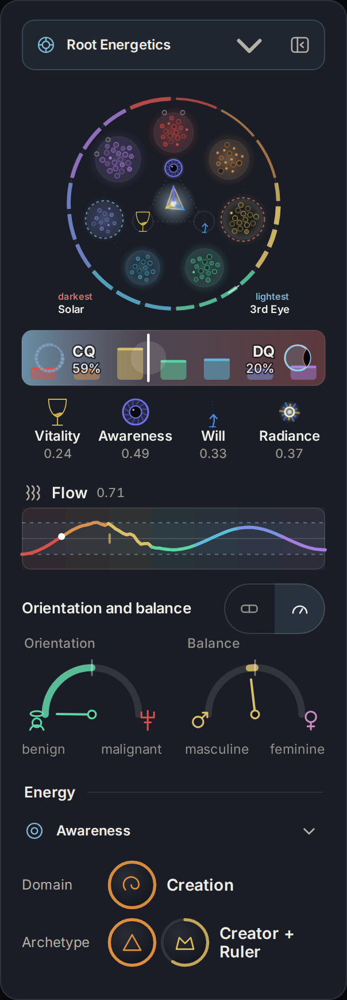

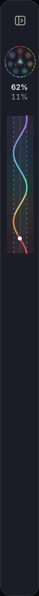

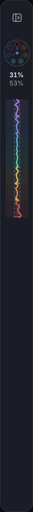

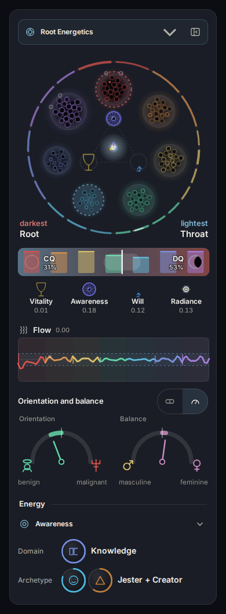

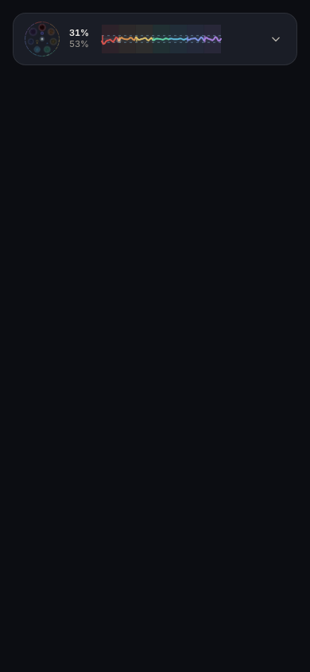
What a person reads at a glance
- CQ
- The outer ring of 21 arcs, seated by seat, thick where a law is held. Printed on the one bar beneath.
- DQ
- The seven rosettes are the seats, each made of its own addresses. The same figure is on the bar, with the seven marks across it.
- Vitality, awareness, will
- Three forms on the three arms of a trefoil: a yellow vessel, an indigo iris, a blue arrow. The arm inside each is as long as its figure.
- Radiance
- The glow where the three arms meet, and the area the three enclose.
- The 112 addresses
- Dark and dense rosette is heavy, light and sparse is clear. A dashed red ring marks the darkest seat and a dashed blue ring the lightest, with their names under the dial.
- Flow
- The band under the dial, same lane, same meaning.
Squint test
First frame
Moving from the first frame in all states, quietly: the wave runs at the Field's rate for the person's DQ, the line on the bar swings, the vessel surface drifts, the iris and sun turn slowly, the lamps breathe at their seat phase, loaded addresses pulse. Closed, the strip keeps the bar, the four forms and a standing wave. Reduced motion draws the end state.
Cost notes
- Highest novelty, mid cost. Replaces the rows entirely, so ui/railwire.js, rbRow and the gates that count six .rbar rows all change.
- One 204 pixel SVG with 112 dots, 7 wells, 21 arcs. Four small chips under it hold the four figures and are the touch targets.
- Shares its language with the Field wheel (Root at the top, seat colours, the ring), which is a plus for one visual language and a risk of looking like a copy of the centre.
- Closed state is a 50 pixel orrery: legible as a ring, not as a reading.
C. The common axis
The seven seats run left to right, root to crown, the way the Flow band already runs, and three layers stand on that one axis so a seat reads straight down: its laws, its addresses, what gets through.

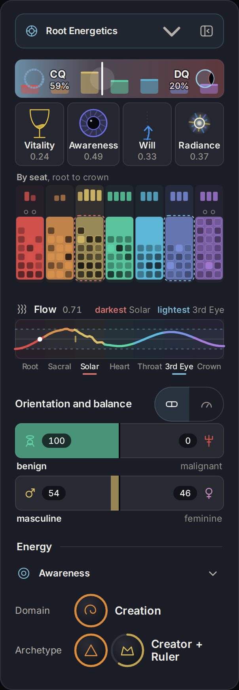

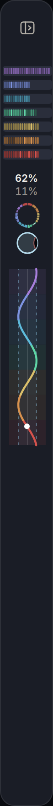

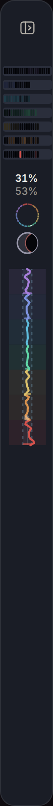

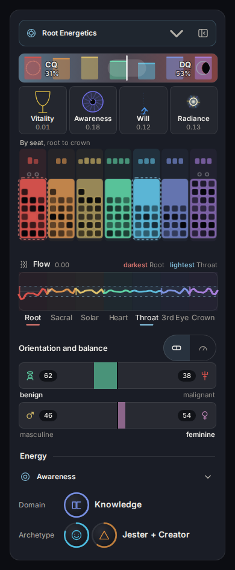

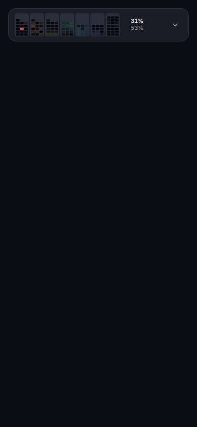
What a person reads at a glance
- CQ and DQ, one bar
- As option A. Below it the same two things are shown by seat.
- Vitality, awareness, will, radiance
- Four tiles in the element colours: a vessel, an iris, an arrow and a sun.
- CQ by seat
- Under each seat, one small bar for each of its laws, tall where held.
- The 112 addresses
- A tray of 3 by 7 slots per seat, filled from the floor. One cell is one address. Bright is clear, black is held. A dashed red outline is the darkest seat, a blue one the lightest.
- Flow
- Directly under the trays on the same seven columns, so a rough stretch of wave sits under the seat that causes it. Seat names under the wave.
Squint test
First frame
Moving from the first frame in all states, quietly: the wave runs at the Field's rate for the person's DQ, the line on the bar swings, the vessel surface drifts, the iris and sun turn slowly, the lamps breathe at their seat phase, loaded addresses pulse. Closed, the strip keeps the bar, the four forms and a standing wave. Reduced motion draws the end state.
Cost notes
- Medium cost. A different structure from the rows, but only plain rects: 112 cells, 21 bars, one band.
- The best answer to tie CQ, DQ and Flow together, because the 21 laws, the 112 addresses and the seven passes are all seated at the same seven seats and here they line up.
- Most text in the rail (seat names at 10 pixels). Names are tight in 37 pixel columns, and 3rd Eye is the widest.
- Phone: scales by viewBox, readable, long.
D. The figure
The 112 addresses are a body: each seat is a slab of dots at its own height on one standing figure whose outline follows the slabs. The readings are placed on the body where they live.

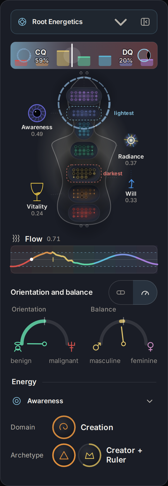

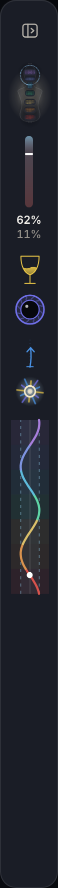

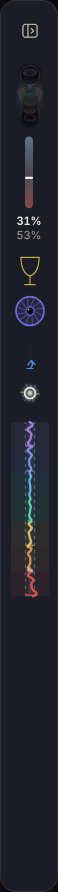

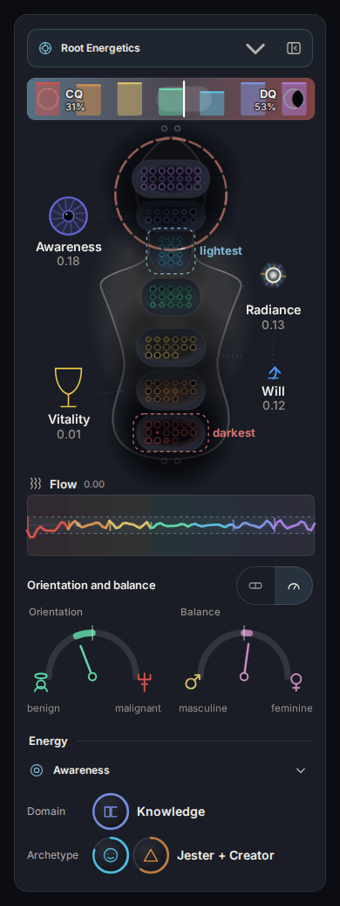

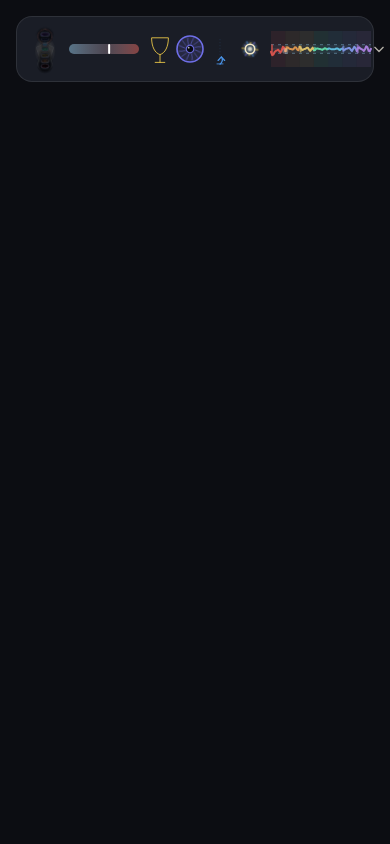
What a person reads at a glance
- CQ
- The halo of 21 arcs round the head, and on the bar above.
- DQ
- The fog over the body, darker where more is held, and on the bar above with the seven marks across it.
- Awareness, will, vitality, radiance
- The indigo iris at the brow, the blue arrow at the solar seat, the yellow vessel low in the belly, the sun at the heart. The aura behind the whole figure is radiance.
- The 112 addresses
- Light and density on the slabs. A dashed red box is the darkest seat, a blue one the lightest, tagged on the body.
- Flow
- The band under the figure.
Squint test
First frame
Moving from the first frame in all states, quietly: the wave runs at the Field's rate for the person's DQ, the line on the bar swings, the vessel surface drifts, the iris and sun turn slowly, the lamps breathe at their seat phase, loaded addresses pulse. Closed, the strip keeps the bar, the four forms and a standing wave. Reduced motion draws the end state.
Cost notes
- Highest build cost. A silhouette path, seven lattice slabs, four overlay buttons so each reading is a 44 pixel target.
- Competes with the Character page and the avatar for the idea of a figure, so it needs a ruling on whether the left menu may carry one.
- Smallest type of the four (names at 11 pixels around a figure), and the figure is a medical looking diagram to some readers.
- Closed state is a 50 pixel figure: recognisable, small.
Awareness opened, and the right panel
Round OT, item 6. The legend under the four roots (the line that said "pale, something you picked is in here", written by syncSoul into #rootlegend in ui/panels.js) is gone. A root that holds one of your picks is lit in its own colour with a dot, so nothing needs a sentence. The strongest three blueprint domains are tiles, the rest are quiet circles behind a fold. Primary and secondary each show their one pick and fold, and a folded group keeps its pick in its header. Here Weaver has been pressed: it opens in Summary on the right, Summary sits above Reading, Summary starts open and Reading starts closed.

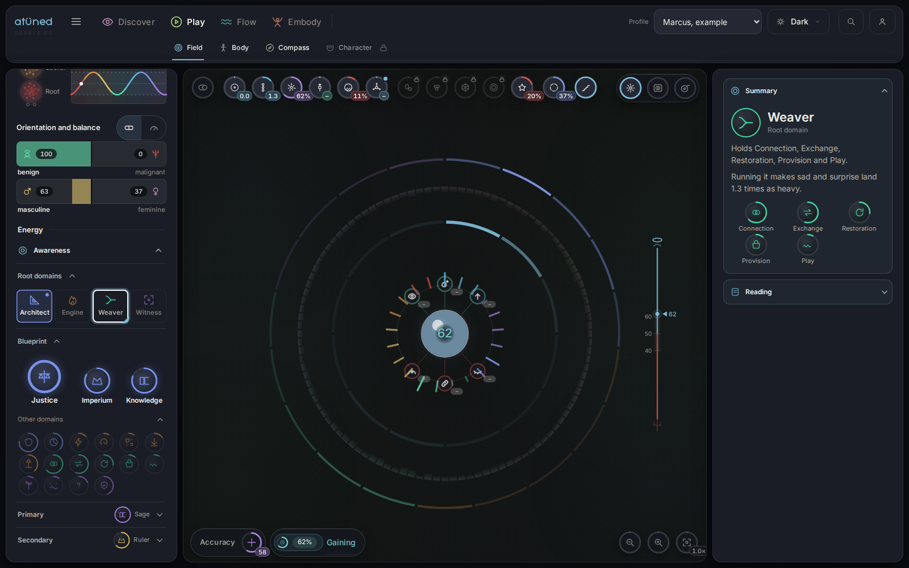

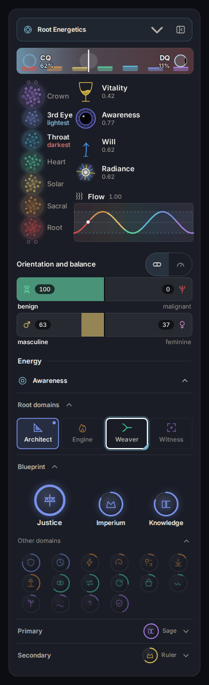
The explainers
You said you did not understand two earlier questions, so each has a picture and a plain caption. Two more are here for the new questions the rounds raised.

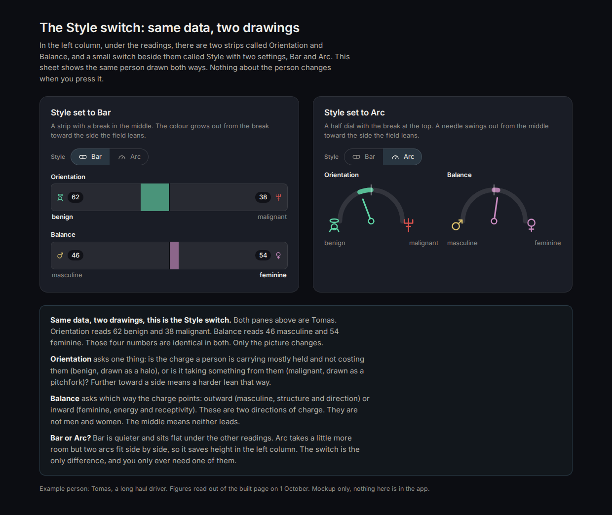

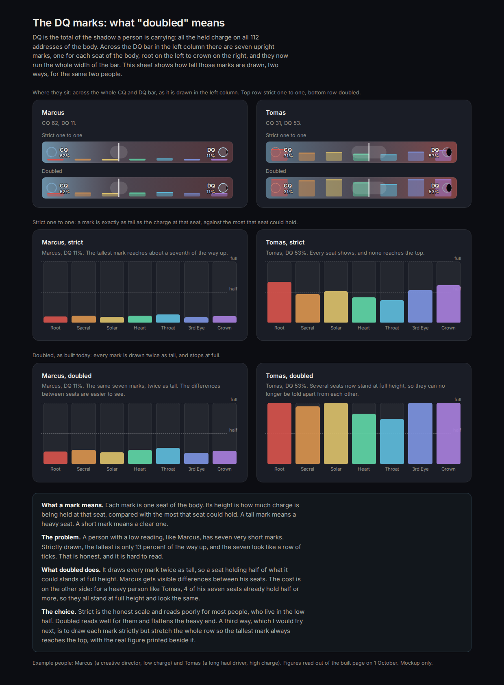

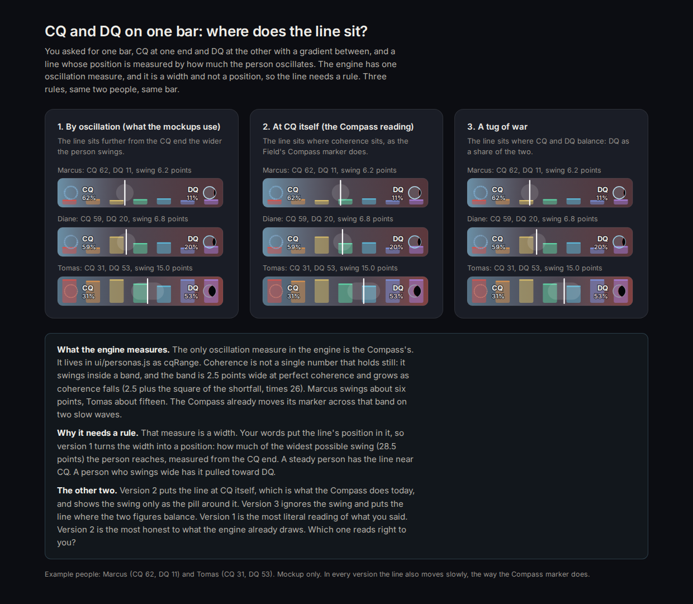

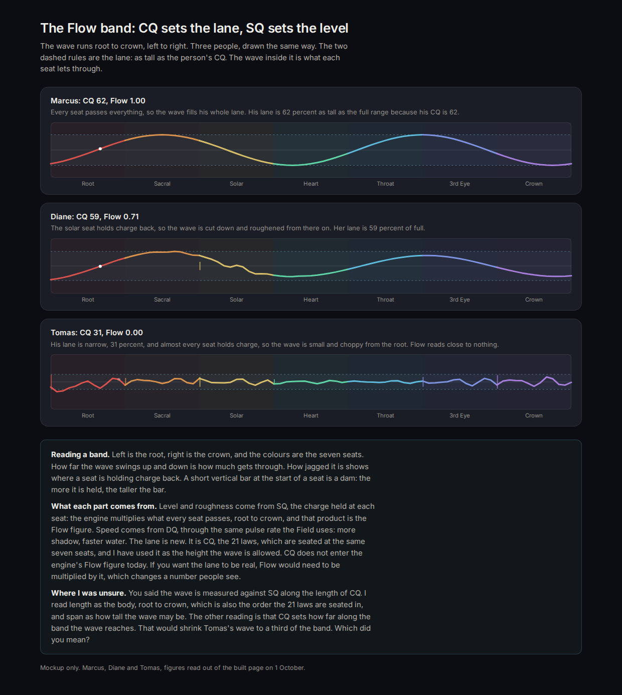
Style, liveDQ marks, liveLine, liveFlow, live
Cost and risk, side by side
| Build cost | What it replaces | Biggest risk | Reads best for | |
|---|---|---|---|---|
| A, the spine | Low | The wire and the bar fills; rows stay | Still a list, so the least new meaning | Level 4 and 5 buyers who still need the names (Angela, Diane) |
| B, the orrery | Medium | All six rows and the wire | Looks like a second Field wheel | People who read a picture before a word (Marcus, Sofia) |
| C, the common axis | Medium | The rows; adds a seat axis | Loud next to the Field, small type | Derek and James, who want the structure and the cause |
| D, the figure | High | The rows and the wire | Competes with the avatar, smallest type | A stranger's first four seconds, Angela |
Dated 1 October 2026. The numbers above are read off shots/measure.json by mksheet.js, so rerun measure.js and mksheet.js after any change.